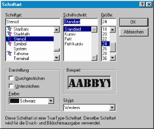

Hilfe
RequestFont

Aufruf
Parameter
Rückgabewert
Beschreibung
Beispiel
Siehe auch
font = RequestFont ()
Parameter
-
Rückgabewert
Identität einer Schrift wird zurückgeliefert. Bei 0 wurde die Auswahl abgebrochen.
Beschreibung
Die Funktion RequestFont blendet einen Standarddialog zur Auswahl einer Schrift ein. Wurde eine Schrift ausgewählt und auf OK geklickt, dann wird diese Schrift geladen und die Identität der Schrift zurückgeliefert. Wurde die Auswahl abgebrochen, dann wird 0 zurückgeliefert.

Beispiel
Zeigt den Font-Dialog. Bei einer Auswahl wird ein Fenster mit Textarea erstellt und Schrift geändert:
font = RequestFont()
If font = 0 Then End
window = CreateWindow(\"Window\", 050, 050, 300, 300, 0, 3)
windoww = ClientWidth(window)
windowh = ClientHeight(window)
textarea = CreateTextArea(5, 5, windoww - 10, windowh - 10, window)
SetTextAreaFont textarea, font
SetGadgetLayout textarea, 1, 1, 1, 1
AddTextAreaText textarea, \"Test\"
Repeat
If GetKey() = 27 Then End
If WaitEvent() = $803 Then End
Forever
If font = 0 Then End
window = CreateWindow(\"Window\", 050, 050, 300, 300, 0, 3)
windoww = ClientWidth(window)
windowh = ClientHeight(window)
textarea = CreateTextArea(5, 5, windoww - 10, windowh - 10, window)
SetTextAreaFont textarea, font
SetGadgetLayout textarea, 1, 1, 1, 1
AddTextAreaText textarea, \"Test\"
Repeat
If GetKey() = 27 Then End
If WaitEvent() = $803 Then End
Forever
Siehe auch
Confirm, Notify, Proceed, RequestColor, RequestFile, RequestDir